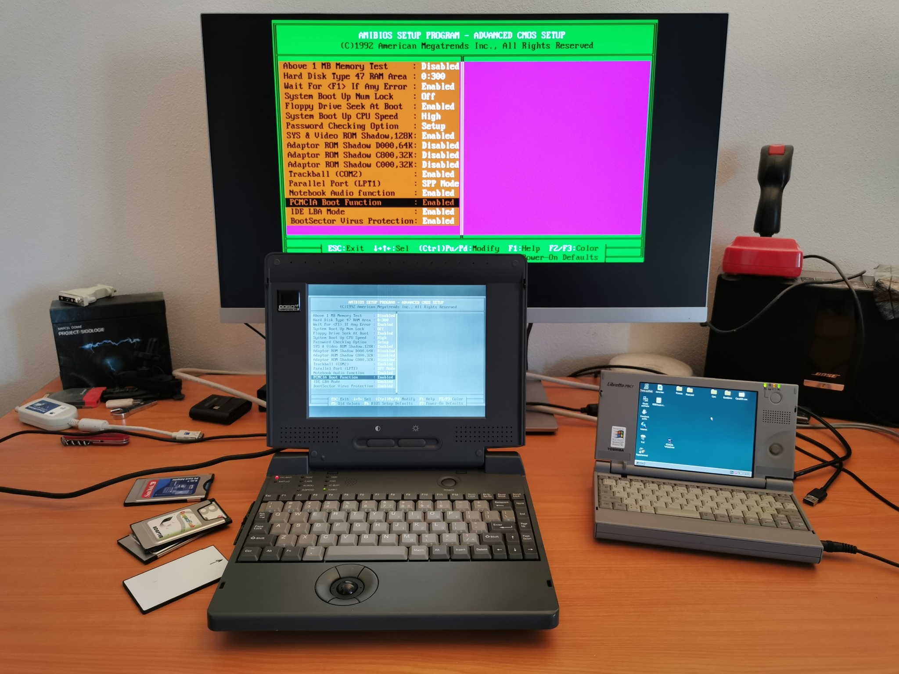
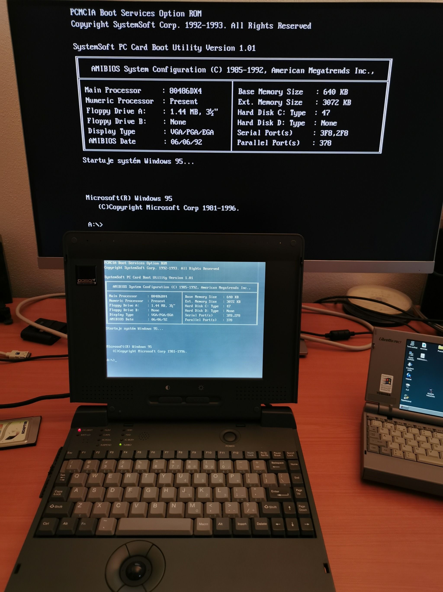
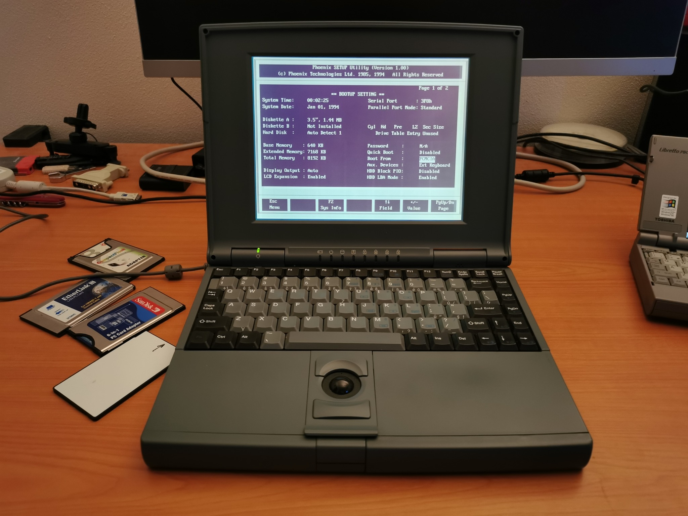

Old laptops booting from PCMCIA
I recently mentioned PCMCIA linear memory cards (both SRAM and flash) that existed before PCMCIA controllers started to support IO devices and ATA. I used such an SRAM card in my Olivetti Quaderno subnotebook instead of its failed hard drive. Quaderno boots DOS from the internal ROM, loads a driver to support SRAM and allows using it as an additional drive. However, there were also laptops that supported booting from PCMCIA cards, and I am surprised that this feature was not uncommon.
Certain 386/486 laptops with Phoenix BIOS have “PCMCIA” in the boot device list (in addition to “hard drive” and “floppy drive”). These support just linear flash/SRAM cards and let you boot DOS out of the card mapped as A:. Everything works just fine and you don’t need to load any PCMCIA driver. ATA PCMCIA and CompactFlash drives are not supported here – they are ignored by the BIOS module.
The laptop with AMI BIOS could have an optional “PCMCIA Boot Function” module. Once it was enabled and a card was inserted, the system booted from PCMCIA and mapped the card again as A:. However, the support was flaky – just good enough to load a proper PCMCIA driver during OS boot.
Laptops from large brands (like Toshiba) mostly didn’t support this feature. ThinkPads were an exception (486 and maybe also early Pentium ones). According to some owners, they even supported booting from ATA/CF cards. However, ThinkPads as well as the laptops with Phoenix and AMI software did not provide a driver-less access to PCMCIA cards if a user booted from a different device. It seems that there is only one known laptop that supported this – MiTAC 4022.